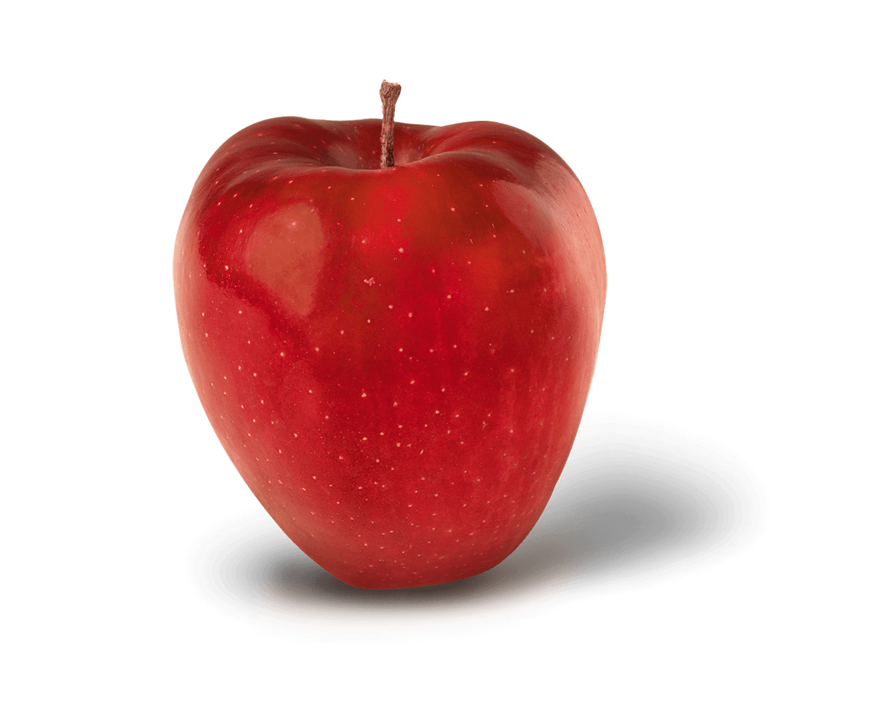

About Red
Red is a really cool color and I like it a lot. It is very nice to look at. And very versatile. It is used in many foods and items.

Red Apple
Red’s Uses
- Red’s present in foods
- Red’s present in nature
- Red’s present in man-made objects
- Red’s is everywhere and it's awesome